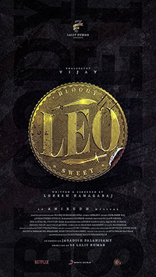

Leo is an upcoming Indian Tamil-language gangster action film directed by Lokesh Kanagaraj, who co-wrote the script with Rathna Kumar and Deeraj Vaidy.
The soundtrack will be composed by Anirudh Ravichander. It is produced by S. S. Lalit Kumar, under Seven Screen Studio, and co-produced by Jagadish Palanisamy. Wikipedia
Initial release : 19 October 2023
Director : Lokesh Kanagaraj
Language : Tamil
Music by : Anirudh Ravichander
Produced by : S. S. Lalit Kumar; Jagadish Palanisamy
Production company : Seven Screen Studio